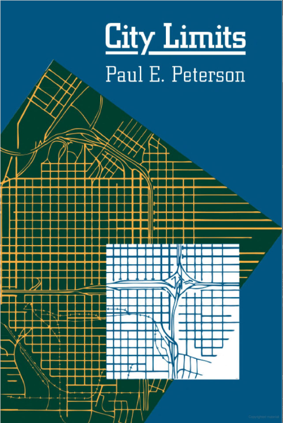

POLS 4641: The Science of Cities
The US Census of Governments defines a government as “an organized entity which, in addition to having governmental character, has sufficient discretion in the management of its own affairs to distinguish it as separate from the administrative structure of any other governmental unit.”
This includes, approximately:
20,000 cities
16,000 townships
38,000 special districts
13,000 school districts
3,000 counties
50 states
1 federal government
Is this too many governments? Too few?
We’ll explore this question through a series of simulations, each illustrating a few key theoretical ideas.
Imagine that you are a person trying to decide where to live.
You only care about three things:
Everyone take a sheet of paper, which describes exactly how much you care about each of these things.
Example Set of Values:
| People per Pickleball Court | Value |
|---|---|
| 10 | $100 |
| 5 | $190 |
| 2 | $220 |
| 1 | $220 |
| Books in Library | Value |
|---|---|
| 0 | $0 |
| 1 | $30 |
| 2 | $50 |
| 3 | $65 |
In order to get pickleball and library books, you need to organize yourselves into towns.
In each town, choose one person to be mayor. Ideally someone trustworthy. Someone who doesn’t mind doing a little arithmetic.
The mayor is responsible for choosing the town’s policy bundle.
The mayor will receive a sheet of paper describing the costs for each level of public goods.
You may, at any point during the simulation:
Move to a different town (“migration”).
Create a brand new town, declaring yourself mayor (“secession”).
Dissolve a town where you are mayor and join another town (“amalgamation”).
Mayors may freely adjust their town’s policy bundle in response to new migration, secession, or amalgamation.
You have 10 minutes to make yourselves as happy as possible.
Go!
What happened?
This simulation captures a few key ideas from (Tiebout 1956). (Pronounced “TEE-bow”).
What important things are left out of this model?
Now we’re going to run the same simulation again, but we’ll add three new rules:
That’s it! I’ll give you another 10 minutes to make yourselves as happy as possible.
Go!
What happened?
Perhaps things played out a bit differently when we added some friction to the idealized model:
Peterson (1981) argues that these forces place fundamental constraints on the sorts of public spending that is feasible for local governments.
He distinguishes between three types of public spending:
Capital mobility makes redistribution tough to finance through local tax revenue.

This one will be quick.
Reconvene with the members of your town. You have one last decision to make.
I am a multinational corporation, and I am considering investing in your town. Congratulations!
I have $10,000 ready to invest right now. (Think of all the pickleball courts that could buy!)
You just have to decide what percent of that investment you’d like to tax.
Take 5 minutes to deliberate, then secretly submit your best offer. I will split my investment evenly among all the towns that offer me the lowest tax rate.
Go!
What happened?
I don’t know what happened. I’m writing this bullet point in the distant past!
But…here’s what theory says should happen?
If every town can successfully coordinate to offer a tax rate of, say, 10%, then every town gets \(\frac{\$1,000}{n}\). Hooray!
But if any town breaks that agreement, offering a tax rate of 9%, they get the entire investment ($900 in tax revenue)!
This is a classic Prisoners’ Dilemma.
| Tax at 10% | Tax at 6% | |
| Tax at 10% | $500, $500 | $0, $600 |
| Tax at 6% | $600, $0 | $300, $300 |
Is 90,000 too many governments? Well, it depends what you want to achieve…
The Tiebout (1956) model (Simulation 1) suggests that some types of public spending are best handled by competing local governments:
Lots of preference diversity
Limited economies of scale
No “spillovers” across geographic boundaries
Residential mobility limits the types of public spending that is feasible for local governments, particularly redistribution (Simulation 2).
Tax competition for mobile capital can yield a “Race to the Bottom” (Simulation 3).
Scholars disagree on how good a model this is of local tax incentives (Jensen, Malesky, and Walsh 2015).
But it’s a very good model of the competition for sports stadiums!
More on that in the Deep Dives.